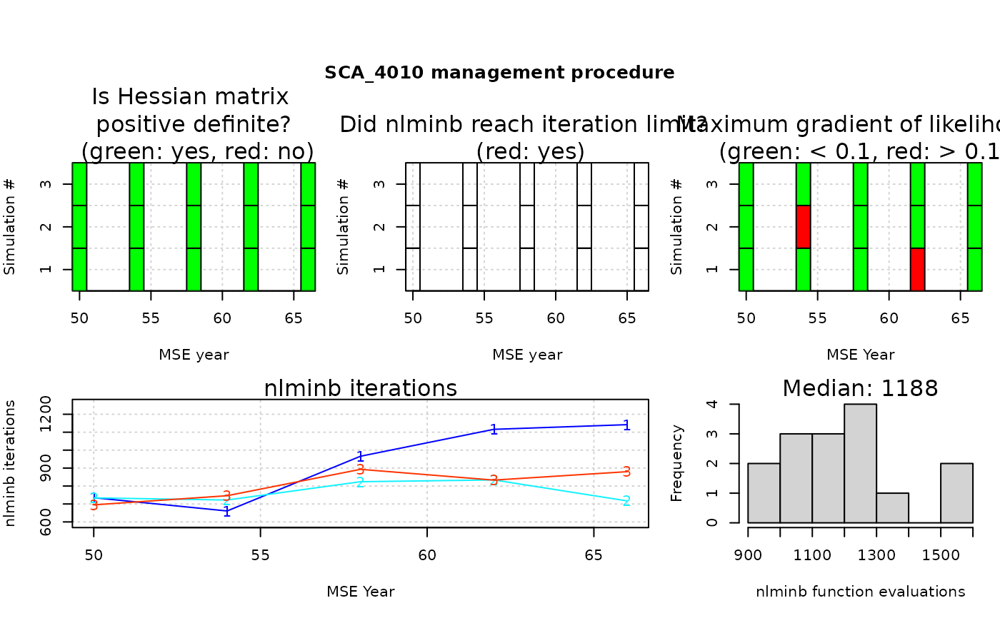

Diagnostic of assessments in MSE: did Assess models converge during MSE?
Source:R/diagnostic.R
diagnostic.RdDiagnostic check for convergence of Assess models during closed-loop simulation. Use when the MP was
created with make_MP with argument diagnostic = "min" or "full".
This function summarizes and plots the diagnostic information.
Arguments
- MSE
An object of class MSE created by
runMSE.- MP
Optional, a character vector of MPs that use assessment models.
- gradient_threshold
The maximum magnitude (absolute value) desired for the gradient of the likelihood.
- figure
Logical, whether a figure will be drawn.
- ...
Arguments to pass to
diagnostic.
Value
A matrix with diagnostic performance of assessment models in the MSE. If figure = TRUE,
a set of figures: traffic light (red/green) plots indicating whether the model converged (defined if a positive-definite
Hessian matrix was obtained), the optimizer reached pre-specified iteration limits (as passed to nlminb),
and the maximum gradient of the likelihood in each assessment run. Also includes the number of optimization iterations
function evaluations reported by nlminb for each application of the assessment model.
Examples
# \donttest{
OM <- MSEtool::testOM; OM@proyears <- 20
myMSE <- runMSE(OM, MPs = "SCA_4010")
#> ✔ Checking MPs
#> ℹ Checking OM for completeness
#> ✔ Loading operating model
#> ✔ Optimizing for user-specified movement
#> ✔ Calculating MSY reference points for each year
#> ✔ Optimizing for user-specified depletion in last historical year
#> ✔ Calculating historical stock and fishing dynamics
#> ✔ Calculating per-recruit reference points
#> ✔ Calculating B-low reference points
#> ✔ Calculating reference yield - best fixed F strategy
#> ✔ Simulating observed data
#> ✔ Running forward projections
#> ✔ 1 / 1 Running MSE for SCA_4010
#>
|=== | 5 % ~33s
|====== | 11% ~15s
|======== | 16% ~10s
|=========== | 21% ~07s
|============== | 26% ~11s
|================ | 32% ~08s
|=================== | 37% ~07s
|====================== | 42% ~05s
|======================== | 47% ~07s
|=========================== | 53% ~05s
|============================= | 58% ~04s
|================================ | 63% ~04s
|=================================== | 68% ~04s
|===================================== | 74% ~03s
|======================================== | 79% ~02s
|=========================================== | 84% ~02s
|============================================= | 89% ~01s
|================================================ | 95% ~01s
|==================================================| 100% elapsed=12s
#>
diagnostic(myMSE)
#> ✔ Creating plots for MP:
#> SCA_4010

#> SCA_4010
#> Percent positive-definite Hessian 100
#> Percent iteration limit reached 0
#> Percent max. gradient < 0.1 80
#> Median iterations 811
#> Median function evaluations 1210
# How to get all the reporting
library(dplyr)
#>
#> Attaching package: ‘dplyr’
#> The following objects are masked from ‘package:stats’:
#>
#> filter, lag
#> The following objects are masked from ‘package:base’:
#>
#> intersect, setdiff, setequal, union
conv_statistics <- lapply(1:myMSE@nMPs, function(m) {
lapply(1:myMSE@nsim, function(x) {
myMSE@PPD[[m]]@Misc[[x]]$diagnostic %>%
mutate(MP = myMSE@MPs[m], Simulation = x)
}) %>% bind_rows()
}) %>% bind_rows()
# }